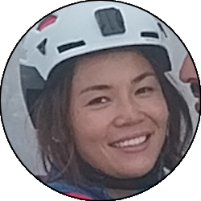
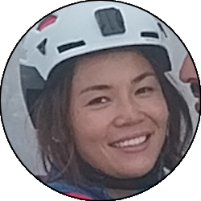

Relazione
| Data Uscita | 24-09-2023, Domenica | Area | Grigne |
|---|---|---|---|
| Luogo di Partenza | Acquedotto dei Piani Resinelli - Abbadia Lariana (LC) | Quota |
1420m (circa) la partenza 1880m il Colle Valsecchi 2184m la cima |
| Dislivello | 900m (circa) | Tempi | 06:00 ore (03:00 ore la via) |
| Esposizione | Ovest | Difficoltà Tecnica | III+ |
| Punti di Appoggio | Bivacco Ferrario o gli esercizi ai Resinelli | Acqua | No |
| Partecipanti |
 Carlo, Carlo,
 Fra,
 Jenna, Fra,
 Jenna,
 Oracolo Oracolo
|
||
(clicca sull'immagine per scarica la traccia GPS)
Accesso
Da Lecco salire in Valsassina fino a Ballabio. Alla rotonda all'ingresso del paese prendere verso sinistra e subito dopo a destra salendo poi per i tornanti fino ai Piani Resinelli. Superato il piazzale (grande parcheggio) all'altezza della chiesa prendere una stretta curva verso destra e seguire la ripida strada fino al suo termine, dove si parcheggia (pochi posti). Nel caso non ci fosse posto parcheggiare sugli altri spiazzi salendo oppure tornare al grande piazzale e partire da lì.
Avvicinamento
Dal parcheggio seguire il sentiero che costeggia il canalone Caimi fino a entrarci, finchè si incrocia il sentiero della Direttissima. Seguire quest'ultimo verso sinistra, attraversando in ordine il canale Pagani (scalette), il canale dei Piccioni e la val Tesa, fino ad arrivare al trivio tra direttissima, sentiero Giorgio e canale Angelina.
Seguire il canale Angelina in ambiente bellissimo, facendo attenzione circa a metà a seguire le catene di sinistra. Superate queste si può decidere se ritraversare all'interno del canale (sentiero bollato). Oppure seguire il prato che su roccia non solidissima porta fino a un caminetto, che superato con qualche passo di arrampicata porta al colletto del Clerici, dove ci si ricongiunge al sentiero normale con qualche passo di arrampicata facile ma esposto. Seguire ora il sentiero Cecilia verso sinistra aggirando dei salti e con qualche catena facile fino ad arrivare al colle Valsecchi. Un cartello indica l'attacco della via sulla destra che per pochi metri di roccette si raggiunge, una comoda piazzola posta alla sinistra di un canale appoggiato che sale verso la cima del torrione.
Via
L1: salire il camino, inizialmente molto facile poi sempre non difficile ma orrido (variante di difficoltà uguale se si esce sullo spigolo di destra), difficile da proteggere, fino all'evidente forcella dove si sosta su un fix o meglio ancora grosso spuntone sulla destra.
» 35m, fix alla forcella (I, II+)
» 35m, fix alla forcella (I, II+)
L2: salire in spaccata tra lo spuntone e la parete fino a trovare una buona mano, a quel punto portarsi sulla parete e superare con un passo di decisione il passo chiave della via (bisogna fidarsi dei piedi e cercare una buona mano un po' alta a sinistra). Si tratta comunque di un solo passo oltre al quale le difficoltà si abbassano di parecchio, fino a un comodo resinato dove conviene fare sosta.
» 15m, 2 resinati (III+)
» 15m, 2 resinati (III+)
Raccordo: proseguire seguendo la crestina con inizialmente una discesina delicata (II, evitabile sulla destra per terreno friabile), poi si aggira un roccione per sentiero sulla destra individuando una cengia che con un passo finale verticale in discesa (II, buone mani e resinato sopra) consente di superare l'intaglio e risalire fino alla sosta su 2 resinati sul torrione successivo.
» 100m (circa), qualche resinato (II e sentiero)
» 100m (circa), qualche resinato (II e sentiero)
L3: effettuare un breve traverso a destra e salire un breve camino con roccia leggermente unta (p. III, resinato + chiodo poco sopra). Uscire ora tramite fessura sulla destra a un comodo terrazino (resinato, comodo per sosta intermedia). Salire ora in verticale (p. III) fino in cima al torrione (Torrione Dorn) oppure, più facile ma più attrito - eventualmente spezzare al terrazzino, girare lo spigolo di destra e salire la facile canaletta in un punto a piacere che porta anch'essa in cima al torrione. Resinato di sosta. Proseguire ora per cresta in conserva fino a un resinato dove una calata da 20m circa (spezzabile al pulpito sotto, resinato nascosto) deposita all'intaglio, e salendo le facili roccette si sosta su 2 fix alla base di un saltino. Se invece si decidesse di disarrampicare (attenzione, passi di III, è il tratto più difficile della via in discesa) si scende leggermente a destra (faccia a valle) del resinato per paretina un po' friabile, poi ci si porta al pulpito col resinato intermedio da cui si scende decisamente a destra (faccia a valle) per paretina verticale ma ben appigliata con passi atletici (III). Arrivati a un terrazzino si va ora invece a sinistra seguendo una fessura di fondo (resinato) che con difficoltà via via minori porta fino all'intaglio.
» 40m, 2 resinati, 1 chiodo vecchio (II pp. III)
» 40m, 2 resinati, 1 chiodo vecchio (II pp. III)
L4: salire il muretto direttamente (passo delicato, III, bisogna salire bene coi piedi e spingere per arrivare a delle mani buone alte). Salire ora per facili roccette passando a destra di una madonnina fino al bordo destro del Torrione Svizzero dove si trova una sosta a fix con catena presso un comodissimo terrazzino.
» 20m (II p. III)
» 20m (II p. III)
L5: scendere ora all'intaglio tra i torrioni senza troppe difficoltà fino a effettuare una spaccata che porta sul Torrione della Finestra. Salire ora in verticale e quando il torrione diventa più verticale traversare a destra in leggera discesa (molto logico, resinato) fino a giungere ad un comodo pulpito sotto un caminetto, ben visibile dalla sosta precedente. Sosta su resinato.
» 20m, 2 resinati (II)
» 20m, 2 resinati (II)
L6: salire il caminetto, infilandosi all'interno (attenzione allo zaino). Non è molto largo ma una volta dentro si riesce a uscire bene; per chi lo volesse comunque è possibile rimanere col corpo all'esterno ma le difficoltà saranno di conseguenza maggiori. Usciti dal camino sulla destra proseguire in verticale per rocce facili, fino a individuare un largo terrazzo sulla destra dove si trova un resinato per fare sosta. Proseguire ora in conserva con una breve discesa passando sul versante Nord e traversare superando un canaletto poco marcato fino a salire qualche metro nel canale successivo, fino a una piccola grottina dove si trova un resinato per fare base nell'affrontare il tiro successivo.
» 30m (II+)
» 30m (II+)
L7: salire in verticale dapprima per roccette poi per fessura abbastanza verticale, fino a raggiungere l'intaglio sulla cresta (resinato sulla destra per sostare). Tiro bello fresco e non difficile.
» 15m (II)
» 15m (II)
Raccordo: proseguire a tiri ora avrebbe poco senso, quindi meglio andare in conserva (o slegati se le capacità lo consentono), le difficoltà calano sensibilmente fino a quasi alla fine. Proseguire verso sinistra seguendo la cresta, scendere per crestina a un comodo intaglio e salire una rampa leggermente verso sinistra che porta ora a una larga cengia sul versante Nord, la quale scende verso il canale della Lingua. Seguire questa cengia in leggera discesa fino a individuare nei pressi del salto che scende alla Lingua un resinato dove una doppia di 15m circa deposita sul fondo del canale (in alternativa disarrampicata di II su roccia un po' delicata). Salire ora il canale senza via obbligata nel fondo o sulla sinistra inizialmente, fino ad arrivare a una selletta (uscita della via Zucchi) dove si salgono le roccette sulla sinistra riguadagnando il filo di cresta. Seguire ora fedelmente la cresta con qualche saliscendi di bassa difficoltà e con un solo punto dove scendere un facile canale appoggiato sulla sinistra, fino ad arrivare a una discesa verticale fino a un intaglio (la Ghiacciaia). Da qui un resinato permette di effettuare una doppia di 10m che deposita all'interno della ghiacciaia (fix verdi di sosta, in alternativa disarrampicata di II)
» 500m (circa), diversi resinati (sentiero e passi di I, II)
» 500m (circa), diversi resinati (sentiero e passi di I, II)
L8: salire la fessura a destra della sosta (passo iniziale un po' faticoso), per poi salire in obliquo a sinistra fino a un diedro solcato da una lama. Salire in spaccata sfruttando la lama fino a raggiungere delle rocce facili che portano a un comodo terrazzino dove sostare (resinato). Dal terrazzino proseguire verso destra tra sentiero e roccette fino ad arrivare alla fine della cresta, nei pressi della catena finale della cresta Cermenati. Questo tiro è evitabile seguendo la traccia dall'intaglio verso destra che deposita più in basso sulla cresta Cermenati; comunque personalmente consiglio di percorrerlo perchè in buone condizioni offre un'arrampicata divertente e permette di sbucare quasi in cima.
» 20m (III)
» 20m (III)
Discesa
Seguire la cresta Cermenati, la via normale di salita alla Grignetta sul versante Sud. Scendere un largo canale ghiaioso e arrivati alla spalla (incrocio del sentiero Cecilia) scendere leggermente verso sinistra seguendo poi la cresta (o leggermente a sinistra) passando in ordine dall'uscita del canale Caimi (molto larga) e dall'incrocio con il traverso dei Magnaghi. Superata l'ultima catena si è all'inizio del bosco Giulia, seguire verso destra (attenzione, poco visibile) costeggiando una paretina dalla quale si scende verso sinistra arrivando direttamente al parcheggio dell'acquedotto.